AboutHi 👋
I am a fifth-year PhD candidate at UNC-Chapel Hill, working with Prof. Guorong Wu. Before UNC, I received my M.S. in Computer Technology from Tianjin University and my B.S. in Digital Media Technology from Shandong University.
My work sits at the intersection of computational neuroscience and machine learning. I build neuro-inspired, interpretable models to analyze brain dynamics from fMRI and related modalities, and draw principles from neural systems to design ML models that are robust, data-efficient, and scientifically meaningful.
NewsRecent
- Aug 20261 paper accepted by EMNLP 2026 main.
- May 2026Excited to join Samsung Research America as a Research Intern in the Digital Health team, working on wearable devices, consumer health, and personalized digital health insights.
- Feb 20261 paper accepted by Information Sciences.
- Jan 2026Attended AAAI 2026 and gave an Oral presentation.
- 20261 paper accepted by Medical Image Analysis.
- Dec 20251 paper accepted by AAAI 2026 as Oral.
- Dec 2025Attended NeurIPS 2025 in San Diego.
- Sep 20252 papers accepted by NeurIPS 2025.
- Aug 20251 paper accepted by Nature Communications.
- Jun 20251 paper accepted by IEEE TBME.
- 20251 paper accepted by Electronics.
- Dec 20241 paper accepted by AAAI 2025 as Oral.
- Oct 2024Attended MICCAI 2024 in Marrakech.
- Sep 20241 paper accepted by NeurIPS 2024.
- Oct 20242 papers accepted by MICCAI 2024.
- Sep 20231 paper accepted by NeurIPS 2023.
- 20232 papers accepted by MICCAI 2023 and IEEE ISBI 2023.
- Aug 2022Joined Prof. Guorong Wu's group at UNC-Chapel Hill as a PhD student.
Publications
-
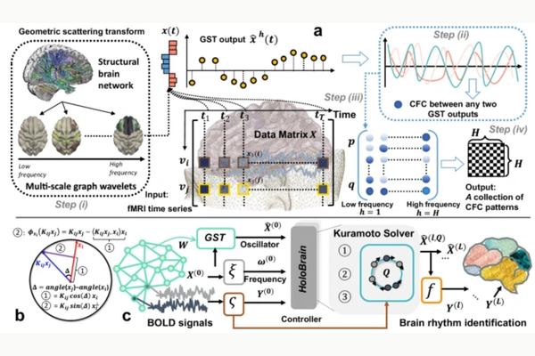
-
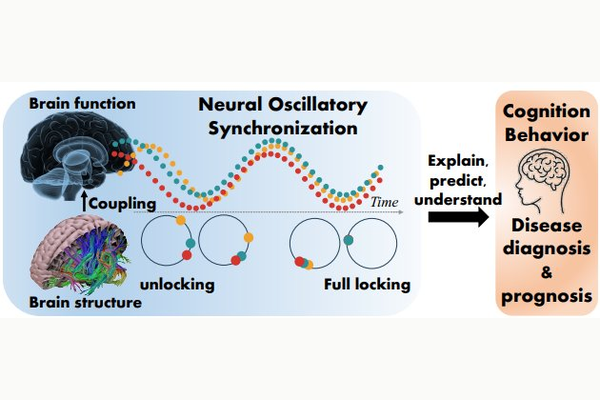
-
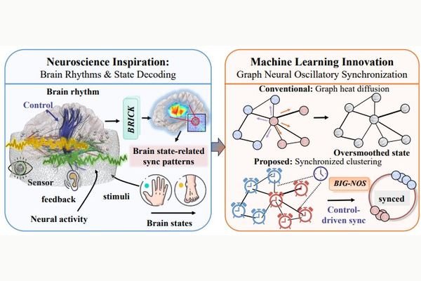
-
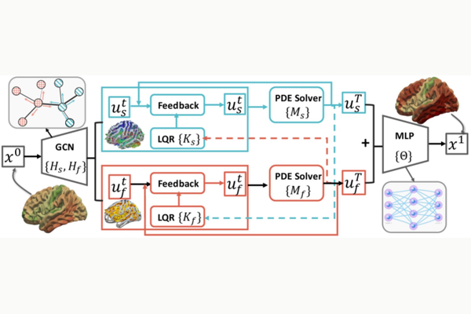
-
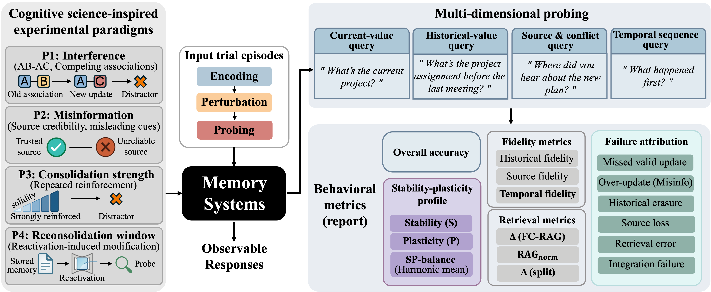
-
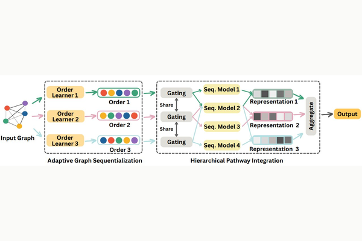
-
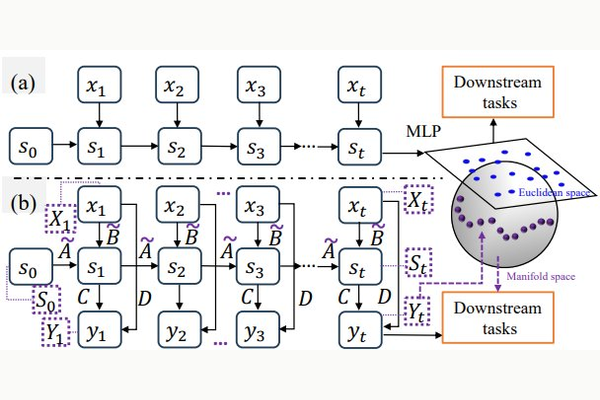
-
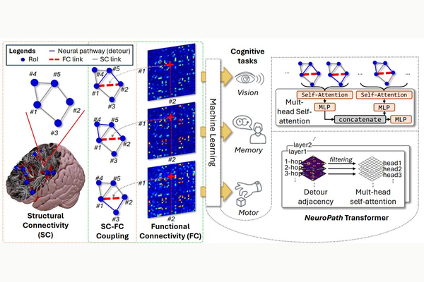
-
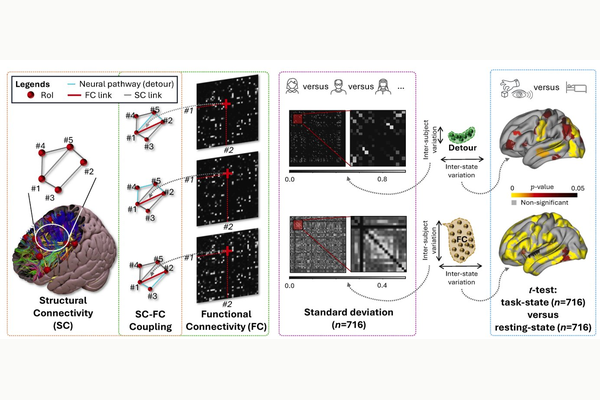
-
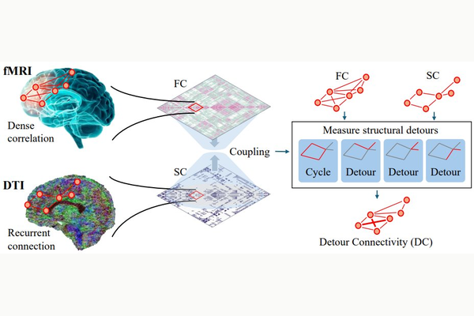
-
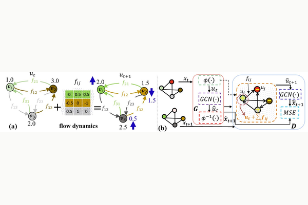
-
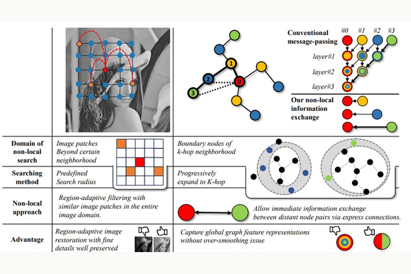
-
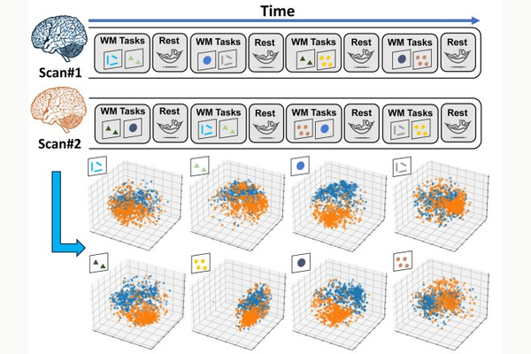
-
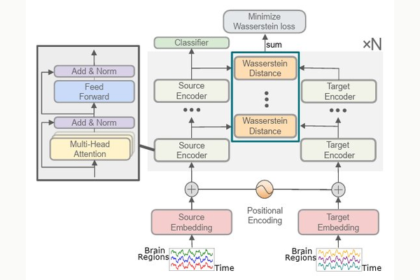
-
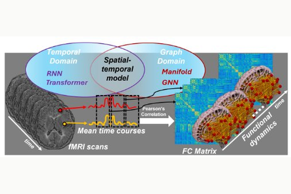
-
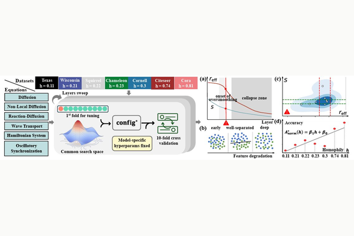
Education
-
2022 — present
PhD in Computer ScienceUNC-Chapel Hill · Advised by Prof. Guorong Wu
-
2019 — 2022
M.S. in Computer TechnologyTianjin University · Advised by Prof. Fei Guo and Prof. Jijun Tang
-
2014 — 2018
B.S. in Digital Media TechnologyShandong University
Honors & Services
Honors
- AAAI 2026 Student Scholarship
- AAAI 2026 Oral presentation
Services
- Reviewer · ICML, ICLR, NeurIPS, AAAI, MICCAI
- Program Committee · T4V @ CVPR 2023, 2024